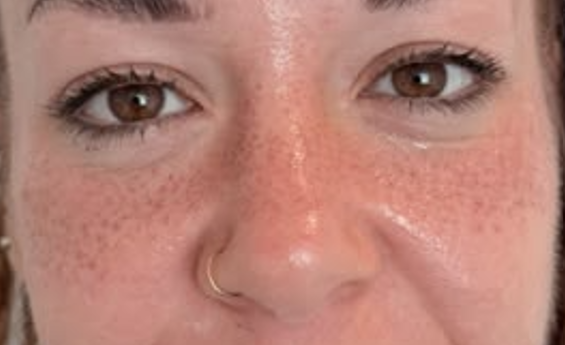

Guía práctica · freckles
Cómo tener un efecto de pecas natural
Si te gustan las freckles pero no quieres un resultado uniforme o artificial, compara primero las opciones temporales y semipermanentes y decide cuánto mantenimiento deseas.
Consultar mi diseño
Tres formas de crear freckles
Maquillaje: permite experimentar con cantidad, tono y posición sin compromiso. Es la mejor primera prueba si todavía no sabes qué distribución te gusta.
Productos cosméticos temporales: utiliza únicamente fórmulas indicadas para uso facial y sigue sus instrucciones. Evita mezclas caseras o productos no diseñados para la piel.
Micropigmentación: crea un efecto semipermanente con pigmento. La profesional valora la piel, acuerda el diseño y explica la evolución antes de comenzar.
Qué hace que unas pecas parezcan naturales
¿Maquillaje o micropigmentación de pecas?
Elige maquillaje si quieres cambiar de estilo a menudo o probar el efecto antes de decidir. Considera una valoración de micropigmentación si ya sabes que te gustan las pecas, deseas evitar el maquillaje diario y comprendes que el color y la fijación evolucionan de manera individual.
La micropigmentación no es adecuada automáticamente para cualquier piel o zona. Debes comunicar alergias, medicación, embarazo, lactancia, afecciones cutáneas y tratamientos recientes. Ante lesiones o manchas dudosas se requiere valoración sanitaria.
Prueba visual antes de reservar
Envíanos una foto sin filtro con luz natural y dos o tres referencias. Te orientaremos sobre el estilo y te explicaremos la valoración presencial.
Enviar mis referenciasEvita estos atajos
- No te expongas al sol con el objetivo de provocar pecas.
- No apliques mezclas caseras o tintes no indicados para el rostro.
- No pigmentes sobre lunares, lesiones o manchas sin una valoración adecuada.
- No copies una plantilla idéntica: la simetría excesiva suele verse artificial.
La protección solar sigue siendo importante aunque quieras un aspecto de pecas. Las freckles diseñadas no requieren sacrificar el cuidado de la piel.
Preguntas sobre pecas falsas y semipermanentes
¿Cómo hacer que las pecas falsas se vean naturales?
Combina puntos suaves y algo más visibles, evita filas y simetrías y no cubras toda la zona con la misma intensidad.
¿Puedo probar el diseño antes de la micropigmentación?
Sí. Las referencias y una prueba visual ayudan a definir el estilo; el diseño definitivo se revisa contigo en la valoración.
¿La micropigmentación de pecas es permanente?
Es semipermanente y se desvanece progresivamente. La duración y la retención dependen de factores individuales.
¿Dónde puedo hacerme freckles cerca de Barcelona?
Nohuska realiza valoraciones y tratamientos en Avinguda Sant Esteve, 40, 08402 Granollers, provincia de Barcelona.

Guía revisada por Valentina
Especialista en micropigmentación y creadora de Signature Freckles en Nohuska Beauty Lab.